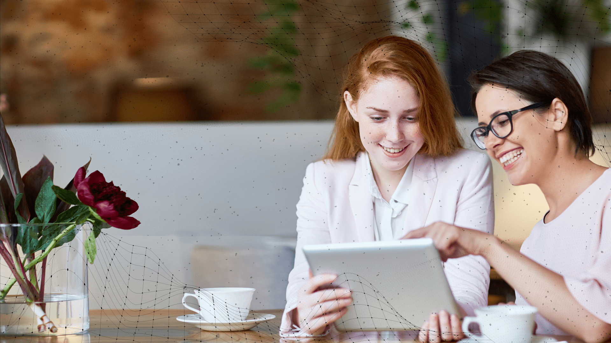

<div class="container-fluid">
    <div class="row">
        <div class="col-xs-12 col-md-12 col-lg-12 col-xl-6 stageTab4-1">
            <div class="wrapTabLeft">
                <h1>Como será o evento?</h1>
                <p class="text-start">A. Abertura na “House of Lords” do Parlamento Inglês</p>
                <p class="text-start">B. 3 palcos simultâneos com 3 painéis tendo como base os <a href="https://freedomee.social/br/#cincomediadores" target="_blank">5 mediadores FreedomeE</a></p>
                <p class="text-start"><b>Palco 1: Humanizando a Economia:</b> Como as pessoas moldam o mercado</p>
                <p class="text-start"><b>Palco 2: Humanizando a Tecnologia:</b> Capacitando e gerando conexões e oportunidades</p>
                <p class="text-start"><b>Palco 3: Economia Circular Inclusiva:</b> Geração de negócios entre países desenvolvidos e subdesenvolvidos</p>
                <h2>Valorizando as diferenças e incentivando a participação, trazemos mais representatividade para a sociedade e atingimos melhores resultados!</h2>
                <p class="text-start">C. No final serão abertas <b>3 Salas de MATCHMAKING COMERCIAL</b> tendo como base os <b>5 Mediadores</b>, com o objetivo de um debate construtivo entre os participantes visando encontrar soluções para melhorar a realidade do ser humano. A proposta é que deste “brainstorm” saiam ações eficazes para que sejam efetivamente desenvolvidas no próximo ano.</p>
                <h2>É a diversidade de ideias multiplicando as soluções!</h2>
                <p class="medT black d-block d-lg-none"><br><br><b>EVENTO ONLINE GRATUITO!</b><br>Freedomee.com<br><b>ECONOMIA CIRCULAR INCLUSIVA</b><br>Como Viver em um Ambiente Global e Justo<br><b>26.10.21 - 12:00 às 17:00</b> (Horário Reino Unido)<br>Com abertura em Londres na “House of Lords” do Parlamento <b>Inglês</b></p>
                <a href="#" class="btn btn-primary" aria-label="Junte-se a nós!" title="Junte-se a nós!">Cadastre-se</a>
                <p class="smallT">Aproveite e também se <a href="https://social.freedomee.social/">cadastre</a> na Plataforma Digital FREEDOMEE.COM e se conecte a infinitas oportunidades de negócios.</p>
            </div>
        </div>
        <div class="col-xs-12 col-md-12 col-lg-12 col-xl-6 stageTab4-2 d-none d-lg-block">
            <div class="wrapTabRight">
                <p class="medT"><br><br><b>EVENTO ONLINE GRATUITO!</b><br>Freedomee.com<br><b>ECONOMIA CIRCULAR INCLUSIVA</b><br>Como Viver em um Ambiente Global e Justo<br><b>26.10.21 - 12:00 às 17:00</b> (Horário Reino Unido)<br>Com abertura em Londres na “House of Lords” do Parlamento <b>Inglês</b></p>
            </div>
        </div>
    </div>
</div>